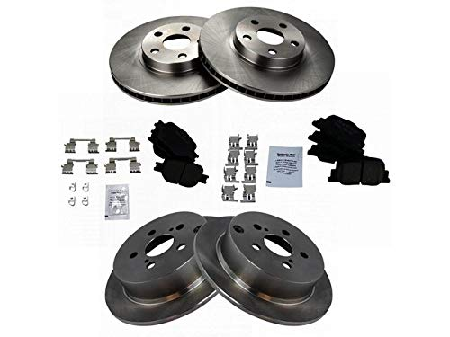
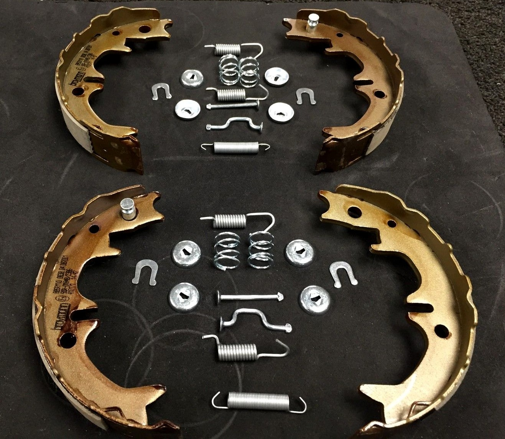
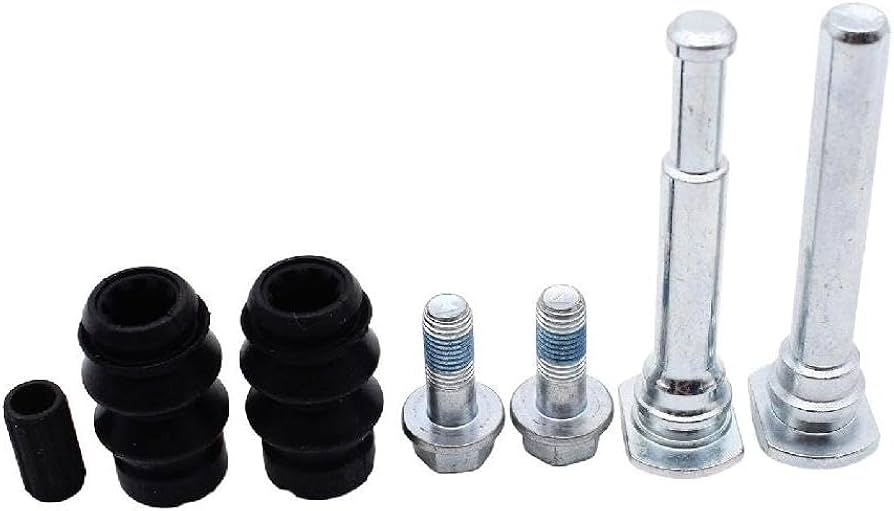

Somos una empresa con más de 25 años en el rubro, destacándonos por la calidad de nuestro servicio y por estar constantemente atentos a nuestros clientes.
Todo Freno es una empresa dedicada exclusivamente a detectar y reparar fallas presentadas en sistemas de frenos convencionales y ABS.
Contamos con la experiencia necesaria para brindar y asegurar un servicio de calidad, entregando garantías para su mayor satisfacción.
Aprendamos sobre frenos
Nuestro Servicio
Contamos con un amplio stock de repuestos para sistemas de freno en la mayoria de las marcas.



Mecánica Integral
Tambien contamos con servicios de Mantenimiento Automotriz, Diagnostico por kilometraje y mantenciones de mayor complejidad.